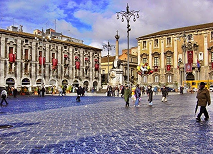
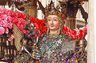
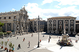

Piazza Duomo può essere considerata essa stessa un monumento: infatti, da qui è iniziata la ricostruzione della città dopo il disastroso terremoto del 1693, perché qui c'erano sempre state le sedi più importanti del Governo cittadino e della Chiesa: il Municipio e il Duomo.

Piazza Duomo è anche il luogo d'incontro dei catanesi nei momenti più intensi della vita cittadina e nelle occasioni solenni, come la grande Festa di S.Agata divenuta nel tempo la terza festa della cristianità nel mondo.
Galleria foto
